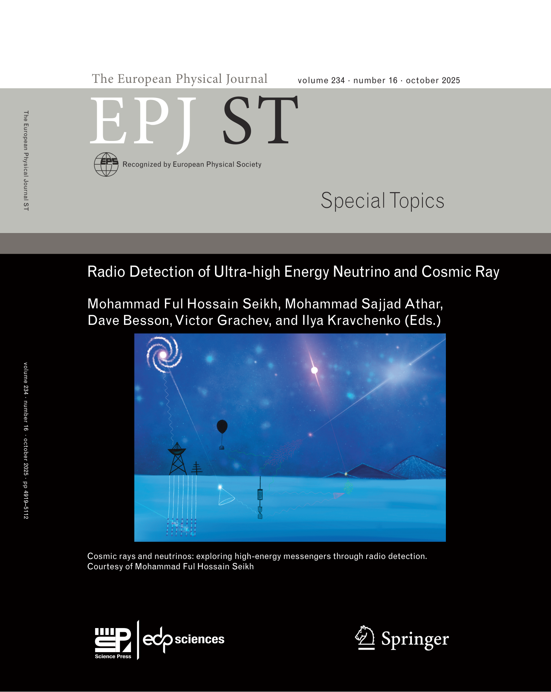
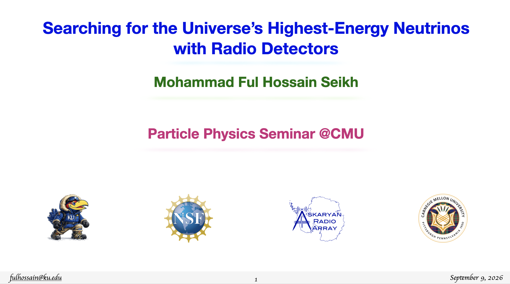
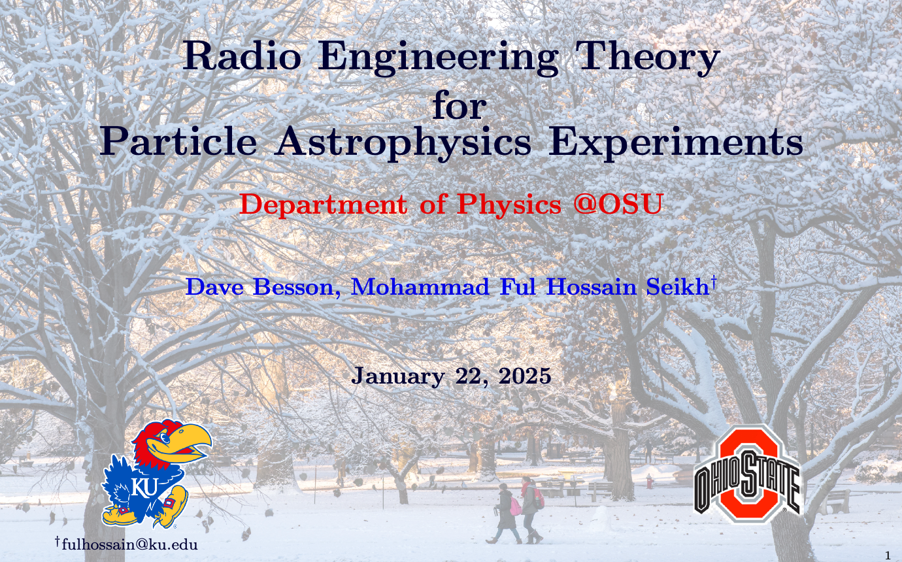
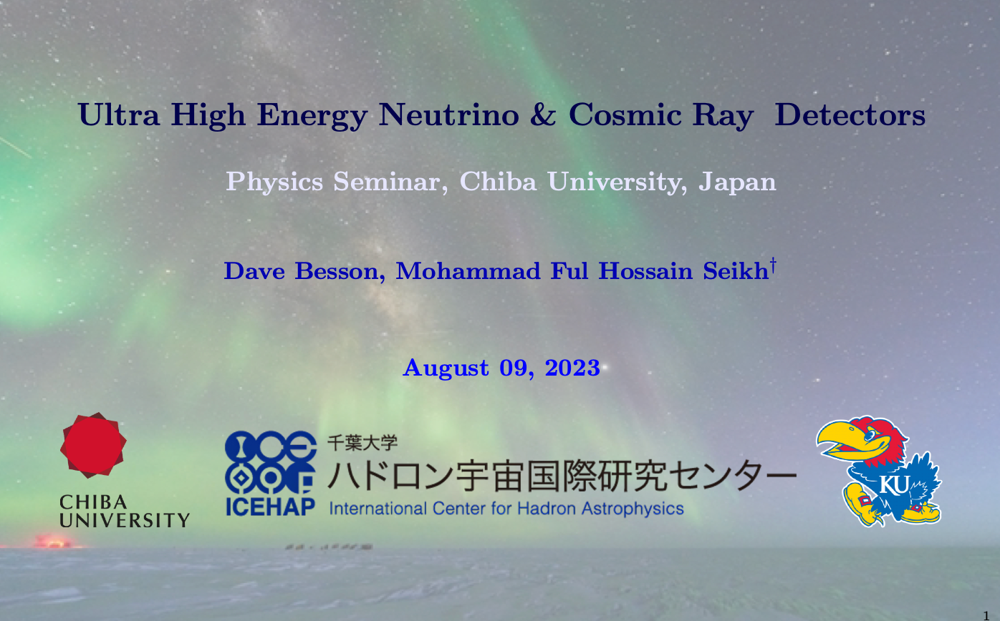
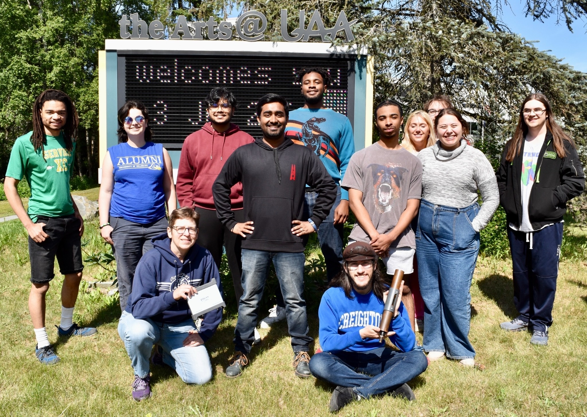

Particle Astrophysics · Radio Detection
Mohammad FulHossain Seikh
Postdoctoral Researcher in Particle Astrophysics
Department of Physics & Astronomy, University of Kansas
I study ultra-high energy particles with radio detectors, with a focus on neutrino astronomy and radio background characterization. My work also spans particle astrophysics, radio instrumentation, antenna physics, and data analysis.
What I Work On
Listening to the Universe Through Polar Ice
My research centers on neutrino astronomy at the highest energies, using radio detectors embedded in polar ice to search for exceptionally rare signals. I work across the full path from detector instrumentation, antennas, calibration, and radio-frequency measurements to event reconstruction, radio background characterization, data analysis, and the scientific tools needed to turn detector signals into physics.

Selected Projects
Tools Built for the Science

Open-Source Scientific Software
MAHAM
Modules for Astroparticle, High-energy, Astronomy and Multimessenger
Reusable, validated methods and data products for astroparticle physics,high-energy astrophysics, astronomy, and multimessenger research.
GitHub · Documentation

Antenna Analysis
AAFIYA
Antenna Analysis in Frequency-domain for Impedance & Yield Assessment
A Python toolkit for reproducible antenna measurement, simulation,and characterization.
Publications & Editorial Work
Selected Scholarly Work
Selected first-author research, my doctoral dissertation, and editorial work in radio detection of ultra-high energy particles.


Edited Volume · 2025
Radio Detectionof Ultra-high EnergyNeutrino and Cosmic Ray
Co-editor of the 2025 European Physical Journal Special Topics volume and author of two articles in the collection, bringing together work across radio neutrino and cosmic-ray detection.
Explore the Volume →Selected First-Author Work
All Publications →Doctoral Dissertation · 2026
Toward a Five-Station Diffuse Ultra-High Energy Neutrino Search with the Askaryan Radio Array: ARA01 Analysis Framework
Conference Proceedings · 2025
Techniques for Continuous Wave Identification and Filtering in the Askaryan Radio Array
AIP Advances · 2025
A Geometrical Approach to Neutrino Oscillation Parameters
Invited Talks
Sharing the Science
Invited seminars and lectures on ultra-high energy neutrinos, radio detectors, and antenna physics.
Carnegie Mellon UniversityParticle Physics Seminar · Sep 2026
The Ohio State UniversityAstroparticle Seminar · Jan 2025
University of Alaska AnchorageIEI Summer School Lecture Series · Jul 2024
Chiba UniversityICEHAP Seminar · Aug 2023
All Invited Talks →







Education
Ph.D. PhysicsUniversity of Kansas · 2026
M.S. Electrical EngineeringUniversity of Kansas · 2025
M.Sc. PhysicsAligarh Muslim University · 2020
B.Sc. PhysicsAligarh Muslim University · 2018
Notes
Ideas, Explanations & Notes
Field & Travel Notes · ALIG Atlanta 2025
From Aligarh to the Arctic
A personal reflection on the journey from Murshidabad and Aligarh to Summit Station, Greenland, shaped by science, community, and gratitude.
Read the Essay →